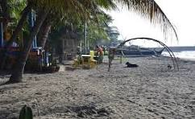

Dawis Beach

Dawis Beach is a popular coastal spot in Digos City, Davao del Sur, known for its tranquil atmosphere and accessibility to locals. It serves as a primary recreational area for the city, featuring a mix of natural shoreline and developed facilities like the Dawis Heritage Wharf.
Key Features & Activities
- Dawis Heritage Wharf: A newly enhanced area featuring a boardwalk and pier, ideal for leisurely walks and enjoying the sea breeze.
- Dining & Leisure: The area has several restaurants and cafes, such as Bittersweet Coffee & Milktea, which are popular for afternoon strolls and local food.
- Festivals: It is a venue for local celebrations like the Padigosan Festival.
- Accommodations: There are various resorts and vacation rentals in the vicinity, including the Lumbayan Beach Resort and local huts available for rent.
Visitor Information
- Accessibility: Located about 1 km south of the Digos Bus Terminal via a paved road.
- Parking: Available with fees ranging from ₱5 for motorcycles to ₱150 for large vehicles.
- Atmosphere: Generally peaceful and best for family picnics or quick getaways, though visitors are advised to be mindful of cleanliness in certain public areas.